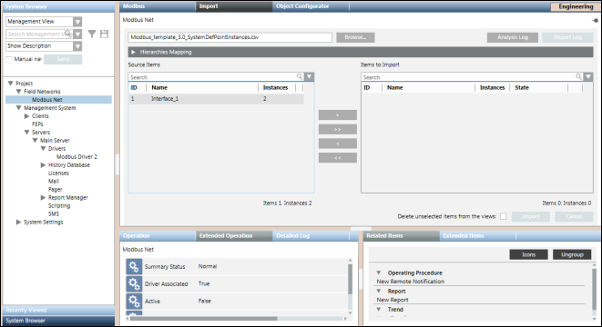
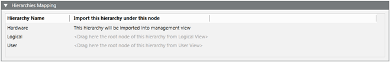

Modbus Device Import
The Import tab allows you to manage the import of field data (engineering objects) described in Modbus configuration files (CSV file).

NOTE:
Power Devices must be integrated in Desigo CC only by the Powermanager extension.

Import Fields | |
| Description |
Browse | Displays the Open dialog box where you can select a file to import. |
Source Items | Displays all the objects available for a selected file, identified by the following:
|
Items to Import | Displays all the objects selected for the import, identified by the following:
By default, this section is empty. Move the items from Source Items to Items to Import or vice versa by double-clicking the single item, or using the buttons that provide tooltips suggesting the action to take. |
Search | Apply a filter to the content of the corresponding list (Source Items or Items to Import). Delete the text in this field to remove the filter. |
Analysis Log | Opens a log displaying the file reading and pre-process operations. This log also contains the time for the operations, the name of the processed files, and warnings/errors (if any). |
Delete unselected items from views | Specify whether or not, during the import, all the items available in the Views but not mentioned under the Modbus interfaces present in the file to import must be deleted. |
Import | Start the import. |
Import Log | Opens a log of the import operation. This button is only available when the import is successfully completed. |
Cancel | Abort the import. This button is available only during the import. |
Hierarchies Mapping Expander
Once you have extracted a CSV file to import, the Hierarchies Mapping expander allows you to define the root node for each hierarchy and for each System Browser view.
The Hierarchies Mapping expander allows you to configure the destination in the system views of the data structures (hierarchies) imported according to the import rules.

Hierarchies Mapping Expander Fields | |
Field | Description |
Hierarchy Name | Displays the hierarchy name. |
Import this hierarchy under this node | Displays the hierarchy import rule (for example, the Hardware hierarchy was assigned to the Management View). |
Re-Import the Modbus Objects
When re-importing Modbus data using a CSV file, the re-import applies to the Modbus interfaces, devices and their field points referred to in the CSV file.
The re-import operation is done in a similar way as the import, except that the pre-existing Modbus objects are updated as follows:
- Creating new data points.
- Updating existing data points.
- Deletion existing data points (only if the Delete unselected items from the views check box is selected).
NOTE:
Deleting the Modbus points results in deleting them from all the hierarchies in other views.
This operation also causes the Management View hierarchy to add objects and internal nodes (points), and delete internal objects. The import process deletes any Modbus devices that are no longer present in the CSV file (only if the Delete unselected items from the views check box is selected).
Dropping of Workstation Alarms during Re-import
Workstation alarms can be dropped or removed from any existing Modbus point by re-importing the same point using a CSV file that does not contain the alarm entry for the corresponding point.
A workstation alarm entry is defined by the AlarmClass, AlarmType, AlarmValue, EventText and NormalText fields. You must manually delete these fields that correspond to the point for which you want to drop the workstation alarms.